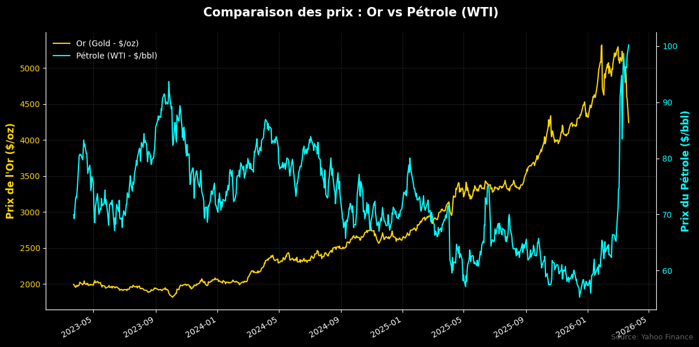

La troisième semaine de mars 2026 s'est imposée comme un tournant historique dans l'ère économique mondiale post-pandémique. Caractérisée par la convergence d'un conflit militaire croissant dans le Golfe persique et d'un « super-cycle » crucial de réunions des banques centrales du G10, cette semaine a vu une réévaluation fondamentale des risques mondiaux. Alors que la guerre entre l'alliance américano-israélienne et l'Iran entrait dans son vingtième jour, le choc initial des marchés a cédé la place à une évaluation plus calculée, quoique sombre, d'un « choc énergétique prolongé ». Cette période a été marquée par la fermeture de facto du détroit d'Hormuz, des attaques systémiques contre les infrastructures énergétiques mondiales et un net durcissement de la politique monétaire des principales autorités qui, jusqu'à récemment, se préparaient à une année de baisses de taux agressives.
1. FX & Banques Centrales
US / Fed : Elle doit jongler entre ses deux mandats, mais part du principe que les risques d’inflation de court terme seront importants, même si cette guerre a un effet destructeur sur la croissance et la consommation de long terme.
La correction au niveau du dollar la semaine passée n’est pas due à des changements macroéconomiques majeurs au sein du pays, mais plutôt à un ton hawkish assez surprenant de la Banque centrale européenne. Quels sont les enjeux? Pourquoi est-ce surprenant? La surprise vient de la rapidité du pivot de la BCE face à l'urgence énergétique, alors que le marché anticipait un attentisme plus long.
Le ton du « Dot Plot » de la Fed demeure relativement hawkish, avec une baisse de 25 bp prévue pour 2026 et idem pour 2027.
La santé immobilière aux US demeure assez stable avec des chiffres sur les ventes qui explosent les anticipations du marché : -0,6 % (consensus) -> 1,8 % (chiffres réels).
Résumé FOMC 18 Mars :
- Maintien des taux : La Fed a décidé de maintenir le taux des fonds fédéraux dans la fourchette de 3,50 % à 3,75 %.
- Évaluation de l'économie : L'activité économique progresse à un rythme "solide", mais les créations d'emplois sont jugées faibles et l'inflation reste "quelque peu élevée".
- Incertitude géopolitique : Le comité surveille de près la situation au Moyen-Orient, notant que ses conséquences pour l'économie américaine sont encore incertaines.
- Vote et dissidence : La décision a été prise à la quasi-unanimité, sauf pour Stephen I. Miran, qui a voté contre pour soutenir une baisse de taux de 0,25 % (25 points de base).
Euro (EUR FX) : On observe une baisse spectaculaire de l'intérêt ouvert sur la devise. Les spéculateurs restent nets longs, mais ils ont massivement réduit leurs positions. Cela montre une prudence extrême malgré le pivot hawkish anticipé de la BCE.
Livre Sterling (GBP) : Un désengagement fort est visible sur le marché. Les spéculateurs sont nettement vendeurs (shorts). Le marché pariait sur une livre faible avant la décision unanime de la BoE de maintenir les taux.
Yen Japonais (JPY) : On note une forte baisse de l'intérêt ouvert. Les spéculateurs restent massivement shorts, pariant sur la faiblesse persistante du yen malgré le report de la hausse des taux par la BoJ.
Dollar Canadien (CAD) : Réduction globale des positions. Les spéculateurs sont presque à l'équilibre, reflétant le statut de "refuge relatif" du Canada face au conflit pétrolier.
À noter que la RBA a été la première banque centrale du G10 à effectuer une "hausse de taux liée à la guerre" le 17 mars (+25 pb à 4,10 %), servant de signal d'alarme pour les autres autorités monétaires.
2. Equities
Une forte baisse a été enregistrée vers le milieu de la semaine dernière, à cause notamment des annonces de taux de la Fed et du conflit en Iran impactant ainsi fortement l’ensemble des industries manufacturières et des entreprises dont le coût de production dépend énormément du coût des différentes énergies. Le VIX, lui aussi, demeure assez haut, ce qui résonne bien avec la crise que nous traversons.
Secteur de l’aviation
Explication brève du Jet CIF :
Le terme Jet CIF désigne une transaction de kérosène (carburant pour l'aviation, type Jet A-1) effectuée selon l'Incoterm CIF (Cost, Insurance, and Freight — Coût, Assurance et Fret).
Dans le cadre des marchés énergétiques et des rapports pour la période de mars 2026, voici ce qu'il faut retenir :
Définition du terme CIF dans le trading pétrolier :
- Le vendeur : Il est responsable de la fourniture du produit, du chargement sur le navire, ainsi que du paiement du transport (fret) et de l'assurance maritime jusqu'au port de destination désigné par l'acheteur.
- L'acheteur : Il prend en charge les frais de déchargement, les droits de douane et le transport final une fois que le navire est arrivé à destination.
- Transfert de risque : Bien que le vendeur paie le transport, le risque de perte ou de dommage est généralement transféré à l'acheteur dès que le produit est chargé à bord au port d'origine.
Le marché du "Jet CIF" est actuellement sous une tension extrême. Selon les rapports de la semaine passée :
- Dépendance européenne : Environ 50 % des importations européennes de kérosène proviennent du Golfe Persique.
- Impact du conflit : Avec environ 23 % du commerce mondial de kérosène par voie maritime transitant par le détroit d'Hormuz (actuellement perturbé par le conflit avec l'Iran), l'offre en Europe s'est considérablement réduite.
- Explosion des prix : Cela a poussé le "jet regrade" (la différence de prix entre le kérosène CIF et le gasoil) à des niveaux records dépassant les 400 $/t, signalant une pénurie critique de carburant pour les compagnies aériennes.
BFM News : "Notre référence n’est pas le Brent mais le Jet CIF" et son prix a plus que doublé : les compagnies aériennes assurent qu'il est "impossible de ne pas répercuter" une telle hausse sur les billets d'avion.
Secteur de la construction, automobile et IA
Création d’opportunités importantes même si le crash ne semble pas être fini pour l’instant avec des risques de hausse encore prédominants sur les différentes énergies : gaz, pétrole, électricité. De plus, dans le secteur tech, Jensen Huang (CEO de Nvidia) a projeté des commandes dépassant les 1 000 milliards de dollars d'ici 2027 lors de la conférence GTC de cette semaine, ce qui explique pourquoi le Nasdaq résiste mieux que le reste du marché.
Indices boursiers : Divergence S&P 500 vs Nasdaq
- S&P 500 (Consolidated) : Explosion de l'intérêt ouvert. Les spéculateurs sont nets vendeurs (shorts), ce qui indique une augmentation des paris baissiers ou une couverture importante contre une chute des marchés en raison du choc énergétique.
- Nasdaq-100 : Augmentation de l'intérêt ouvert. Contrairement au S&P, les spéculateurs sont nets acheteurs (longs). Cela confirme l'optimisme persistant pour le secteur technologique qui semble décorrélé des risques macroéconomiques classiques.
Une méfiance croissante envers l'économie générale compensée par une foi inébranlable dans la tech.
3. Commodities
Or : Retracement
Nous sommes sur 9 jours de baisse consécutive sur l’or. Mais alors pourquoi? D’une part, comme le mentionne l’article de la semaine dernière, le dollar se renforce et l’or étant coté en dollar perd de la valeur. Mais une baisse aussi importante ne dépend pas exclusivement de l’appréciation du billet vert. L’argument clé serait un pivot au niveau de la prise de risque des investisseurs, même si des paramètres se confrontent.
Premièrement, le marché semble risk-off : les investisseurs retirent leur cash, ce qui devrait consolider l’or qui reste une valeur refuge en temps de crise, mais que nenni. L'explication demeure assez simple : l’or est une valeur très liquide. De ce fait, suite à la baisse importante que nous avons vue la semaine dernière, les investisseurs et les fonds ont besoin de cash afin de pouvoir subvenir à leurs appels de marge et/ou couvrir leurs pertes.
De plus, étant donné la conjoncture au niveau des différentes politiques monétaires et étant donné que l’or ne rapporte aucun yield, les obligations semblent être une meilleure alternative pour la plupart des investisseurs afin de se couvrir du risque et leur assurer une certaine rentabilité.
Dollar qui reprend en force, avec des attentes de EUR/USD vers les 1.1/1.2 qui signifieraient une baisse encore plus importante de l’or sur les semaines et mois à venir.
Gaz et Pétrole
Ces deux actifs sont, comme nous le savons, fortement influencés par la guerre au Moyen-Orient. Avec de nombreuses infrastructures pétrolières détruites et le détroit d’Hormuz condamné, les stocks de pétrole de chaque pays vont vite diminuer et il va falloir trouver une solution rapidement afin de ne pas voir le prix de l’énergie augmenter dans des proportions trop importantes pour que les entreprises puissent continuer de produire.
De plus, les frappes sur les installations de GNL au Qatar vont entraîner une perte de 3 % de la production mondiale pour une période de 3 à 5 ans. Cela signifie que le choc gazier n'est pas seulement temporaire, mais structurel pour la fin de la décennie.
Le pétrole, lui, flirte avec les 115 $ le baril. Il faut s’attendre à une récession inflationniste si les banques centrales se contentent juste d’augmenter les taux afin de réduire l’inflation, car le prix des matières premières, des produits finis et de l’énergie vont drastiquement augmenter, causant ainsi une inflation non finançable. Et pour cause : une hausse trop agressive des taux ou trop tôt.

Léo Lombardini
Fondateur & Quant Analyst
Étudiant à l'EDHEC Business School en Marchés Financiers. Passionné par l'intersection entre la modélisation macroéconomique fondamentale et l'analyse quantitative systématique.
Suivre sur LinkedIn